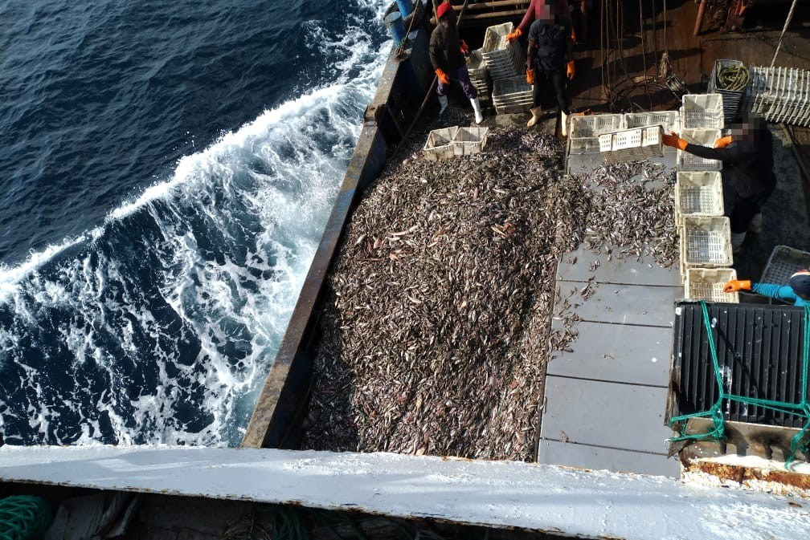
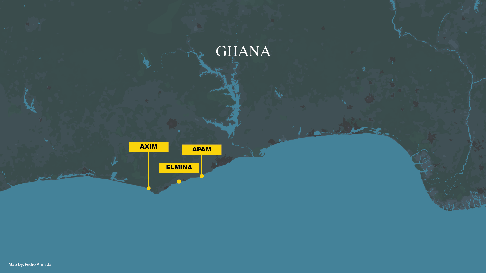
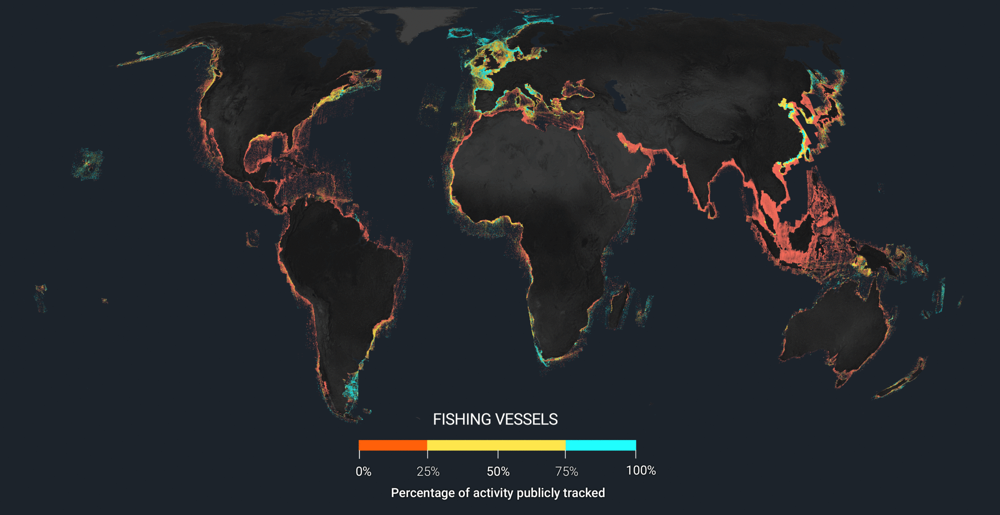
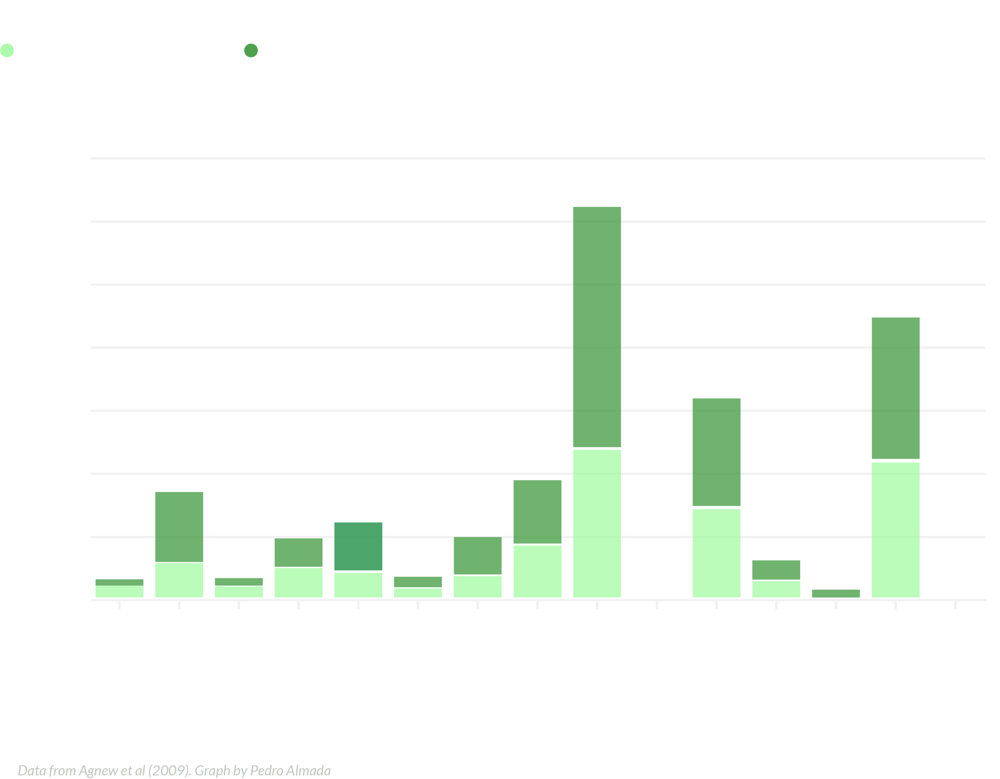
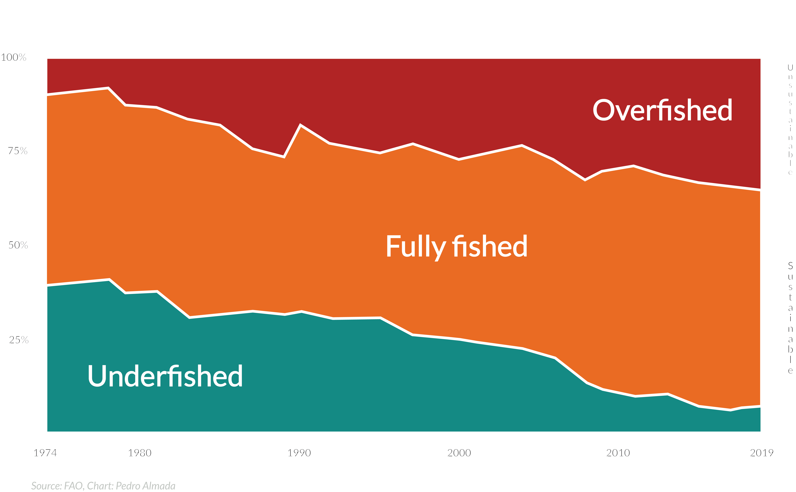
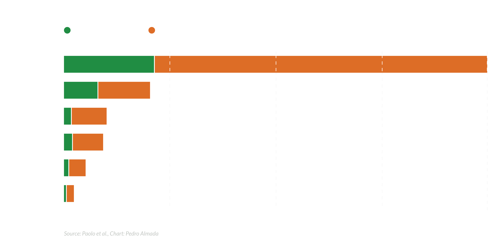

Exploring the impact of illegal, unreported, and unregulated fishing in Ghana and the technologies used to combat it.
For generations, Ghanian families have relied on the ocean's bounty for their livelihoods. Fishing is an essential part of Ghanan culture, traditions, and livelihoods, as Ghana’s fisheries bound 186 coastal villages and are the providers of a primary source of income, covering over two million people. But today, the once-teeming waters are returning an increasing number of fishers with no catch.
Illegal, unreported, and unregulated (IUU) fishing, a clandestine operation that is depleting Ghana's marine resources and threatening the very existence of its artisanal fishing communities. Fish populations in Ghana are falling,
While an increasing number of fishers struggle to make ends meet, advanced technologies like Machine Learning, AI, and satellite imagery are emerging as unexpected allies in the fight to save Ghana’s fisheries. This is the story of how technology is giving hope to those battling the invisible enemy lurking beneath the waves.
Saiko
Saiko fishing was a practice that was initially intended for the sale of unwanted bycatch, but now it has evolved into a significant and lucrative industry. Now, industrial trawlers target fish, that are critical to artisanal fishers, to sell to the local communities. Industrial trawlers meet with specially adapted canoes at predetermined coordinates at sea to sell frozen fish. These Ghanaian canoes, then bring the fish to shore to re-sale at local markets, often at higher prices than traditional catches due to the quality and quantity of the haul.
Saiko fishing has a big impact on the local marine ecosystem while harming Ghanaian fisheries management efforts by bypassing regulations designed to protect fish stocks. This leads to overfishing by incentivising trawlers to catch more fish than legally permitted, including juvenile and endangered species. This not only depletes fish populations but also damages the marine ecosystem and reduces the reproductive capacity of fish stocks.
At the end of 2019, the Ghanian government, stetted through the 2020 Budget Statement of the government of Ghana, THAT “all domestic and international fleet that are involved in “Saiko” fishing shall be banned from fishing in Ghanian waters.” A year later, an investigation from EJF estimated that in 2020, between 18,586 and 30,976 tonnes of fish were illegally traded through “Saiko”, with a landed value ranging from $14.3 million to $38.3 million. Meaning that from 2019 to 2020, the number of fish traded illegally through Saiko in Ghana increased by approximately 28.5%, with the landed value also rising by about 28.5%.
In September 2021, the government took action to stop the illegal Saiko fish trade at sea. Following these measures, the Environmental Justice Foundation (EJF) confirmed through satellite monitoring and community reports that the practice had significantly decreased. However, it quickly became clear that while trans-shipments at sea had ceased, the illegal trade adapted to new methods, and Saiko fishing took a different form.
According to a report from EJF and HenMpoano,"Saiko" fishing has significantly disrupted the distribution of benefits from Ghana's marine resources in a significant way. In 2017, for example, around 80 Saiko Canoes landed more than 55% of the total catch of the entire artisanal sector. Each Saiko canoe, capable of holding around 26 tonnes of fish, can bring the equivalent of approximately 450 trips made by traditional artisanal fishers.
Employment figures showcase the inequity. The artisanal fishing sector, supporting over 100, 000 fishers across 292 landing sites, translates to about 60 jobs per 100 metric tonnes of fish caught. In contrast, the Saiko industry provides only around 1.5 jobs per 100 metric tonnes of fish. with up to 1,500 crewmembers, watchmen, and hustlers employed across the main Saiko landing sites of Elmina, Apam, and Axim. Furthermore, about 90% of the industrial trawlers involved in Saiko fishing are linked to Chinese beneficial owners, contravening local laws and concentrating profits in the hands of a few foreign entities.
Foreign Beneficiaries Under local flags
Operating through Ghanaian "front" companies to bypass national laws prohibiting foreign ownership in the fishing industry, Chinese beneficial owners manage to represent 90% of Ghana's Industrial trawlers. These trawlers, often employing destructive fishing practices, are a significant source of illegal catches.

Fishers operating onboard a fishing trawler.. Photo: Environmental Justice Foundation
The operation of these trawlers is highly organised, often involving complex logistics to maintain their activities at sea. For example, Saiko canoes supply trawlers with food, fuel, and other necessities, allowing them to stay at sea longer and continue fishing without interruption. This logistical support ensures a steady flow of fish from the trawlers to local markets, perpetuating the cycle of illegal fishing.
On June 17, 2019, the vessel LU Rong Yuan 956 was apprehended with a substantial amount of illegal catch on board: 405 boxes and 864 slabs of frozen small pelagic fish, mostly below the minimum landing size. The vessel was also found guilty of several fisheries infractions, including non-reporting of its catch and the use of undersized mesh nets. The Fisheries Commission confirmed that the vessel had docked at Tema port but failed to report a portion of its catch. Instead, it left the port with the intention of trans-shipping the fish at sea to a Saiko canoe. In October 2019, the owner of the vessel was fined US$1 million and an additional GHS 124,000 for the illegal catch. However, the registered owner, Ghanian fisheries and Sons Ltd, refused to pay, leading to further legal proceedings. This case is notable as it is one of the few instances where the minimum statutory fine has been imposed for using prohibited fishing gear and targeting undersized fish, highlighting the severity of the vessel's violations.
The LU Rong Yuan 956, operated by Rongcheng Ocean Fishery Co Ltd under a Ghanaian flag, had a track record of visiting multiple ports in the region. According to Global Fishing Watch data, from August 15, 2015, to May 15, 2021, the vessel made 24 port visits—22 in Ghana, one in Togo, and one in Ivory Coast. During this period, it also had 29 loitering events, indicating potential illegal fishing activities or preparation for trans-shipments. The vessel's movements were tracked using Automatic Identification System (AIS) data from various sources, ensuring a coherent track record despite the challenges inherent to AIS, such as intermittent transmission and potential identity inaccuracies.
Data showing vessel LU Rong Yuan 956 operations in Ghanian waters. Source: Global Fishing Watch. Map: Pedro Almada
The tracking data from Global Fishing Watch reveals the extensive operations of the LU Rong Yuan 956 in West African waters, emphasising the vessel's significant role in the illegal fishing trade. The vessel's numerous port visits and loitering events, predominantly in Ghanaian waters, underline the persistent challenge of monitoring and enforcing regulations against illegal fishing activities. This data, derived from AIS sources, highlights the need for continuous development of tracking methods to ensure accurate and comprehensive monitoring of fishing vessels, thereby supporting efforts to combat IUU fishing effectively.
However, The Chinese beneficiary vessel; Lu Rong Yuan Yu 956, operated by Rongcheng Ocean Fishery Co. Ltd., has been controversially re-licensed to fish in Ghana despite having failed to pay previous fines. Initially fined USD 1 million in 2019 for using illegal nets and catching undersized fish, the vessel was caught again for similar offenses and fined a second time in May this year. Despite these repeated violations and unpaid fines, the vessel continues to receive fishing permits.
Main Ports

The fishing communities of Elmina, Apam, and Axim are severely impacted by the illegal Saiko fishing trade. Elmina, the largest and most active port, is a central hub for these activities. A report by the Environmental Justice Foundation and Hen Mpoano reported in 2017 around 60 Saiko canoes operated from Elmina. Each Saiko canoe, capable of holding up to 26 tonnes of fish per trip, lands fish in quantities that far exceed the efforts of traditional artisanal fishers. This influx of illegally caught fish has severely disrupted the local economy, displacing many artisanal fishers who struggle to compete with the sheer volume of Saiko landings.
The same Report stated that In Apam, around 20 Saiko canoes were actively engaged in this illegal trade. Although smaller in scale compared to Elmina, the impact on Apam’s fishing community is significant. The efficiency of Saiko canoes, where each trip equates to hundreds of artisanal fishing trips, has led to considerable economic strain on local fishers. The dominance of Saiko fishing in Apam has not only reduced the fish available to artisanal fishers but has also driven down fish prices, exacerbating economic challenges for these communities.
Axim also experiences the detrimental effects of this illegal practice. Although smaller in scale with three Saiko canoes, according to the EJF’s and Hen Mpoano’s report, compared to Elmina and Apam, the economic impact on Axim's local community is still significant. The reduction in fish stocks and the influx of Saiko fish into the market have created a challenging environment for artisanal fishers, leading to diminished incomes and increased economic insecurity.
The Global Impact

Data showing the amount of vessels publicly tracked around the world. Map by Global Fishing Watch.
Economic Impact: IUU fishing has significant economic repercussions. It leads to substantial revenue losses for legal fishers and governments. According to the Environmental Justice Foundation, the global economic loss from IUU fishing is estimated at $10 billion to $23.5 billion annually. This loss affects the livelihoods of millions of people who depend on fishing as a primary source of income. In addition, it disrupts the seafood market, leading to price volatility and reduced market opportunities for law-abiding fishers.

Environmental Impact: The environmental consequences of IUU fishing are profound. Illegal fishing practices often involve destructive techniques, such as the use of dynamite or poison, which cause extensive damage to marine habitats. Overfishing of targeted species leads to the collapse of fish populations, disrupting the balance of marine ecosystems. Bycatch, the unintentional capture of non-target species, including endangered marine life, is another critical issue exacerbated by IUU fishing.

Social Impact: IUU fishing also has dire social implications. It undermines food security, particularly in coastal communities that rely heavily on fish as a staple source of protein. The depletion of fish stocks forces fishers to venture farther into dangerous waters, increasing the risk of accidents and loss of life. Additionally, IUU fishing is often linked to other forms of illegal activities, such as human trafficking and forced labour, further exacerbating social injustices and human rights abuses in the fishing industry.
Technologies at the Forefront
In recent years, advancements in technology have provided new tools to combat Illegal, Unreported, and Unregulated (IUU) fishing. Among the most promising technologies are satellite image analysis, machine learning, and artificial intelligence (AI). These technologies offer powerful means to monitor, detect, and deter illegal fishing activities on a global scale.
Automatic Identification Systems (AIS) are essential for maritime surveillance, transmitting real-time data on vessel positions, identities, courses, and speeds. This data is crucial for monitoring marine traffic and enforcing regulations. However, due to the vast amount of data generated, advanced analysis methods are needed. "Machine learning and artificial intelligence (AI) algorithms significantly enhance AIS data analysis," says Luca Marsaglia, Fisheries Analyst for the European Union at Global Fishing Watch. "These technologies can identify patterns and anomalies that indicate illegal fishing, such as unusual movement patterns or AIS signal disruptions."
AI enhances the capabilities of satellite image analysis and machine learning by providing advanced predictive analytics. AI can process and integrate data from multiple sources, including satellite images, vessel tracking systems, and environmental data, to predict where IUU fishing is likely to occur. This predictive capability allows authorities to allocate resources more efficiently and respond proactively to potential threats.
Satellite technology enables the continuous monitoring of vast ocean areas. High-resolution satellite imagery can capture detailed images of fishing vessels and their activities, regardless of their location. This technology helps identify suspicious vessel behaviour, such as unauthorised entry into protected areas or unusual movement patterns indicating potential illegal fishing activities. Marsaglia adds, "By training on historical data, AI can detect suspicious activities and predict potential illegal fishing hotspots, allowing authorities to allocate resources more effectively and improve enforcement efforts."
Synthetic Aperture Radar (SAR) is an effective technology, as it can capture high-resolution images regardless of weather conditions or time of day. "SAR is particularly useful for detecting vessels that may not be transmitting AIS signals. Optical imagery, another type of satellite image analysis, provides detailed visual information in clear weather conditions, allowing analysts to identify specific vessel types and activities," says Natali Giomi, Partnership Manager for Latin America and the Caribbean at SkyLight. “Infrared imagery, used to detect heat signatures, can be employed to monitor night-time activities and detect vessels that might otherwise be hidden.” Natali added. By combining these different types of satellite image analysis, Skylight and Global Fishing Watch can provide a more accurate and comprehensive picture of fishing activities.
SAR Vessel Detection
Data on SAR vessel detection around the world. Source: Global Fishing Watch. Map: Pedro Almada
The Processes
The integration of these technologies creates a robust system for detecting and preventing IUU fishing. Here’s how each technology contributes to this effort:
Detection: Satellite image and AIS analysis provides a continuous stream of data, capturing images of the ocean and vessels in near real-time. By analysing these data sets, authorities can detect suspicious activities, such as vessels operating without proper identification or fishing in restricted zones. "Satellite imagery can reveal when a trawler stops at sea, indicating a possible transshipment of fish to smaller boats” explains Luca Marsaglia, Fisheries Analyst for the European Union at Global Fishing Watch. Natali Giomi, Partnership Manager for Latin America and the Caribbean at SkyLight, adds, "SAR is particularly useful for detecting vessels that may not be transmitting AIS signals, commonly used in illegal fishing."
Identification: Machine learning algorithms can analyse movement patterns and other behaviours to identify vessels engaged in IUU fishing. These algorithms can compare current vessel activities with historical data to flag anomalies. For instance, if a vessel exhibits erratic movements or deviates from its declared fishing area, it can be flagged for further investigation. "Machine learning algorithms significantly enhance AIS data analysis," says Marsaglia. Giomi. Natali Giomi adds, "Optical imagery, another type of satellite image analysis, provides detailed visual information in clear weather conditions, allowing analysts to identify specific vessel types and activities."
Prediction: AI systems can predict potential IUU fishing hotspots by integrating various data sources. By analysing factors such as sea surface temperatures, chlorophyll levels, and historical fishing data, AI can forecast where fish are likely to congregate and where illegal fishing might occur. This predictive capability enables authorities to deploy patrols and surveillance resources more effectively, targeting areas at higher risk of IUU activities. "By training on historical data, AI can detect suspicious activities and predict potential illegal fishing hotspots," notes Marsaglia. Giomi adds, "This allows authorities to allocate resources more effectively and improve enforcement efforts."
Enforcement: The combination of these technologies enhances enforcement capabilities. Real-time data from satellites, processed by machine learning and AI, can be shared with maritime authorities and enforcement agencies. This allows for rapid response to illegal activities, increasing the likelihood of apprehending offenders. Furthermore, the data collected serves as evidence in prosecuting IUU fishing cases, ensuring that perpetrators are held accountable. "Effective enforcement relies on the seamless integration technologies and the collaborations with local organisations, government entities and local communities, says Matthew Markides- Senior Analyst at TMT.
By incorporating these technologies, authorities can significantly improve their ability to detect, identify, predict, and enforce measures against IUU fishing, ultimately protecting marine ecosystems and supporting sustainable fishing practices.
Challenges and Limitations
While satellite and AI technologies provide powerful tools in the fight against Illegal, Unreported, and Unregulated (IUU) fishing, they are not without limitations. One major challenge is detecting small artisanal boats, which often lack Automatic Identification System (AIS) transponders, making them difficult to track. High-resolution satellite imagery can help, but the necessary resolution is expensive and technically demanding. Data accuracy also poses a challenge, as interpreting vast amounts of satellite data relies on advanced algorithms and machine learning models that can be affected by environmental factors like cloud cover and sea state. "While these technologies are invaluable, they are not infallible and face significant limitations in accurately detecting smaller vessels," says Matthew Markides, Senior Analyst at TMT.

Even when illegal activities are detected accurately, enforcement remains a critical hurdle. Maritime enforcement agencies frequently lack the resources and capacity to respond to every instance of suspected IUU fishing. The vastness of the ocean and the mobility of fishing vessels complicate real-time interception of illegal operations. Effective combat of IUU fishing requires collaborative efforts involving local organisations, governments, and international bodies. "Collaboration is key. Local knowledge combined with technological insights can significantly enhance monitoring and enforcement efforts," Markides emphasises. Working together on the ground and at sea, these entities can enhance monitoring, share vital data, and implement enforcement actions to protect marine resources effectively.
While satellite and AI technologies have significantly advanced the fight against IUU fishing, challenges such as the detection of small boats, data accuracy, and enforcement difficulties persist. Addressing these challenges requires a multi-faceted approach, combining technological advancements with stronger international cooperation and investment in local enforcement capacities. The people of Ghana, whose livelihoods are intertwined with the health of their marine environment, face immense challenges from illegal fishing activities. By continuing to innovate and collaborate, it is possible to enhance the effectiveness of these technologies and move closer to eradicating IUU fishing.
While satellite and AI technologies have significantly advanced the fight against IUU fishing, challenges such as the detection of small boats, data accuracy, and enforcement difficulties persist. Addressing these challenges requires a multi-faceted approach, combining technological advancements with stronger international cooperation and investment in local enforcement capacities. The people of Ghana, whose livelihoods are intertwined with the health of their marine environment, face immense challenges from illegal fishing activities.
“By continuing to innovate and collaborate, it is possible to enhance the effectiveness of these technologies and move closer making a positive change in combating IUU fishing”. -Luca Marsaglia, Data Analyst, Global Fishing Watch.
A Ghanian fishing boat heading out to sea from Elmina Port. Photo:Lieven Engelen